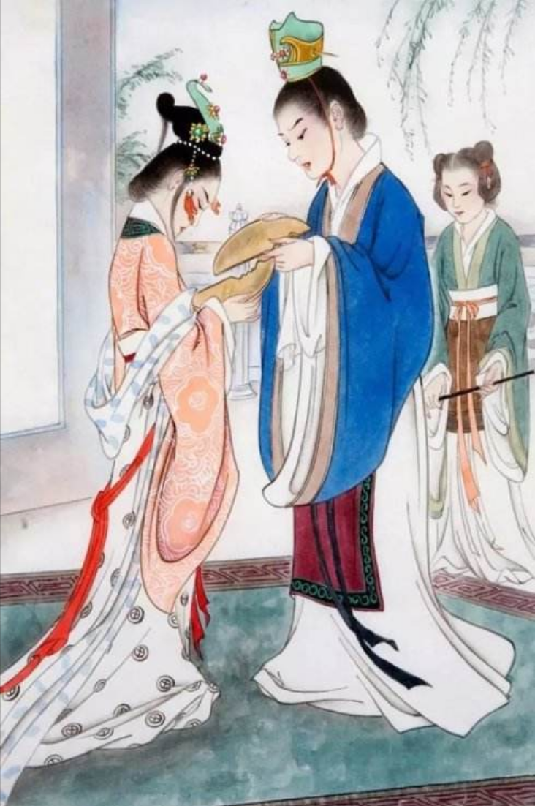
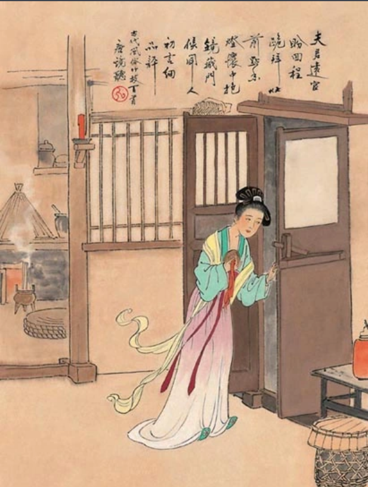
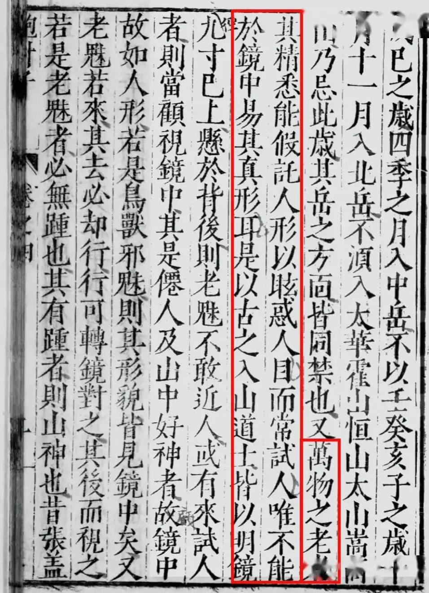

信物
古人常把铜镜作为爱情信物，以 “半镜” 象征夫妻分离，以 “破镜重圆” 喻夫妇失散后重聚或离而复合。
玄光自青铜而生，古镜凝岁月无声。繁复纹样镌刻先民浪漫，清冷镜光流转世代光景。小小铜鉴，照容颜，亦承载绵延不绝的东方古韵。


古人常把铜镜作为爱情信物，以 “半镜” 象征夫妻分离，以 “破镜重圆” 喻夫妇失散后重聚或离而复合。

铜镜占卜从唐代开始流行，俗称 “镜听”、“镜卜” 等。就是在除夕或岁首的夜里抱着镜子偷听路人的无意之言，以此来占卜吉凶祸福。

道教是中国传统文化中重要的宗教体系之一，它对铜镜辟邪的信仰有着深远的影响。道教认为，铜镜中的反光可以显现出人的精气神，同时也能够照见并驱散邪灵。在民间传说中，铜镜也常常被描绘为辟邪的宝物。例如，传说中的门神秦叔宝和尉迟恭，他们的形象常被刻画在铜镜背面，以期借此两位将军的威猛之力来抵御邪灵。